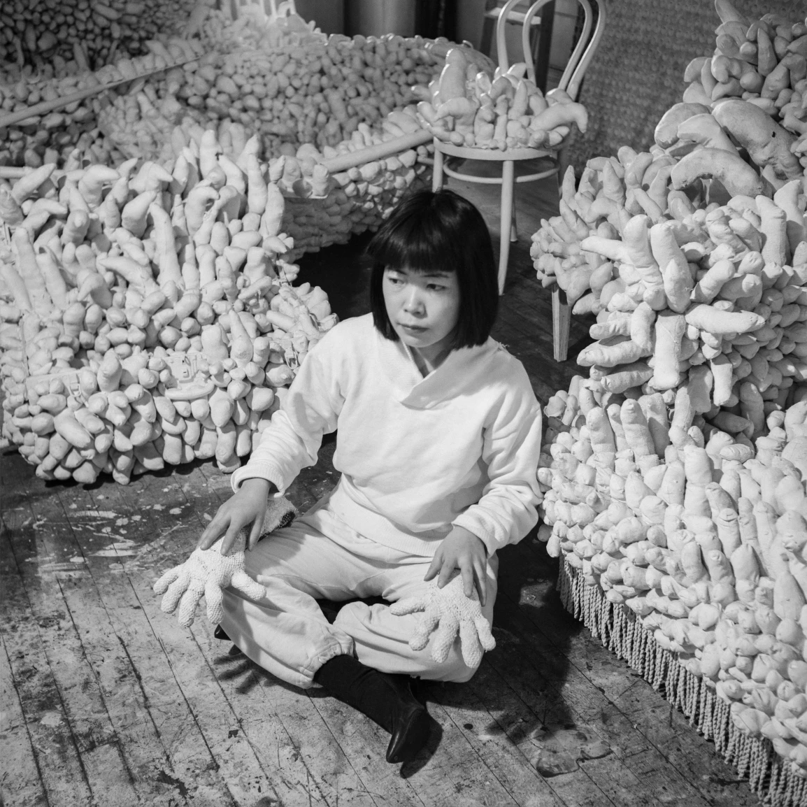
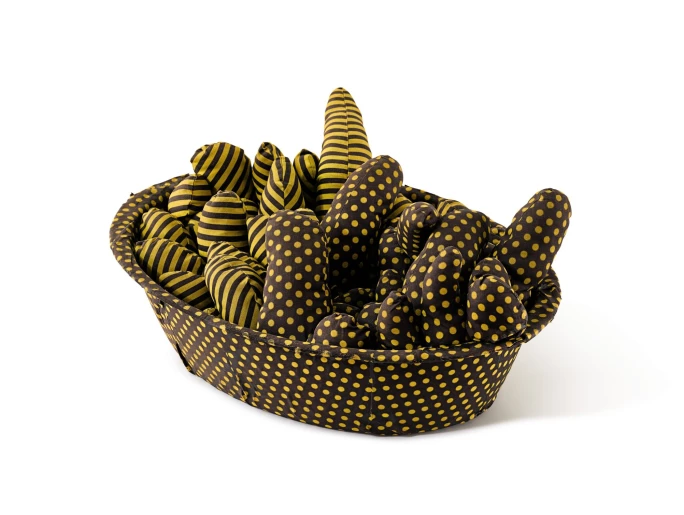
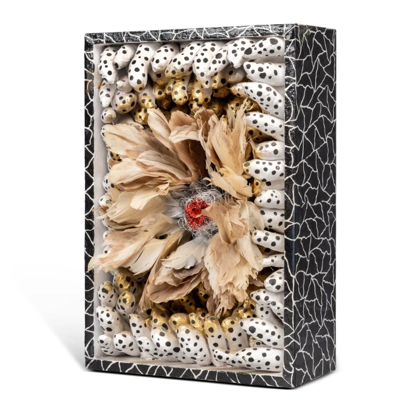
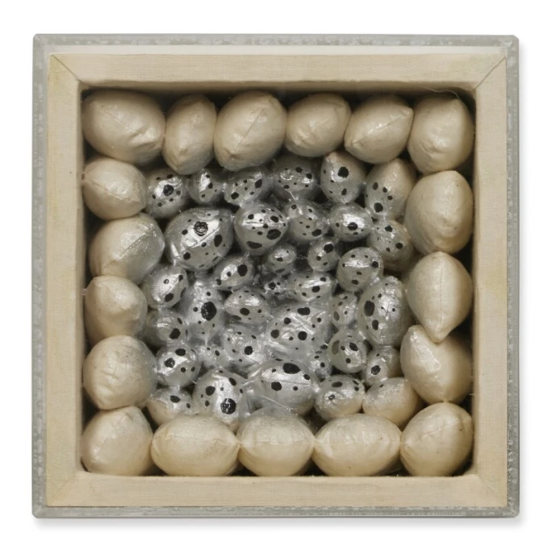
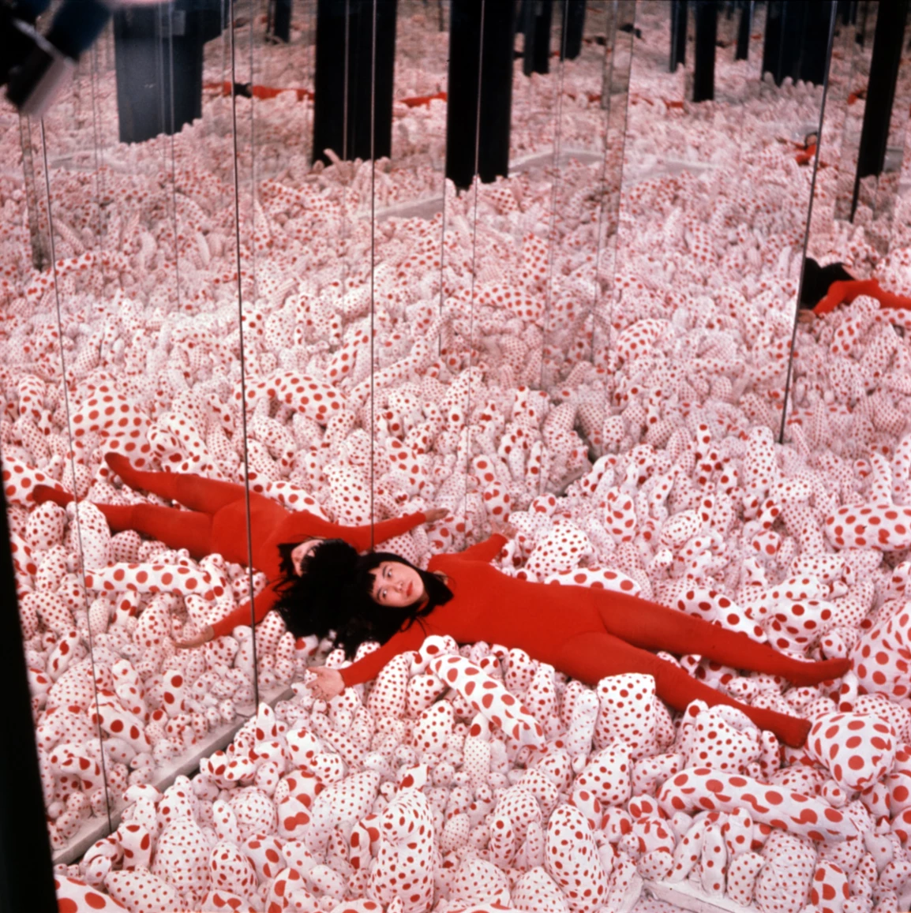
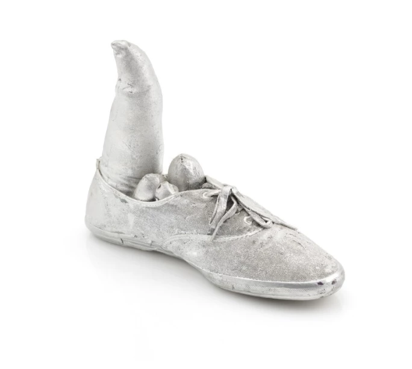

譯自 Caroline Ha Thuc · Sotheby's Hong Kong · 2022年11月22日
草間彌生（Yayoi Kusama）的無限鏡屋和南瓜雕塑聞名於世，光芒往往蓋過她的軟雕塑，但其實這些軟雕塑是一道大門，帶領我們走進藝術家的內心世界，更理解她的實踐和痴迷。現在就讓我們探索她這個鮮為人知的創作面向。
自1961年起，軟雕塑一直是草間彌生創作重心之一。她當時住在紐約，最初創作的幾個軟雕塑系列以家具和日常用品為題材，上面鋪滿大量機器製和手工縫製的柔軟陽具形狀，象徵她與性之間的模糊關係，並反映她的心理狀態。很多人認為，這些作品預示了1960年代中期在美國興起的女權運動。除了宣洩個人情感外，這些軟雕塑更象徵草間彌生的願景：她視世界為不可分割的整體，當中的物體和生物一直不斷變換、交織。
草間彌生在29歲時前往美國，遠離她眼中過於保守的日本社會，還有被母親的意志主宰的家庭。儘管不諳英語，她為了實現藝術夢不惜遠赴他鄉。在紐約，草間彌生受普普藝術、極簡主義、概念藝術和偶發藝術等藝術運動薰陶，完全沉浸在當地充滿活力的藝術氣氛當中。
草間彌生曾學習日本傳統繪畫，但此時的她已從日本畫風格中解放，轉向創作以微小而重複的圖案構成的《無限網》系列。無限網自此成為草間彌生的藝術圖騰，而且這個系列至今仍有新作品面世。
草間將她在紐約的日子形容為一場持久戰；當時她為了創作尺幅如壁畫般龐大的《無限網》系列，必須耗用大量油彩，而這些材料售價高昂，使她經常陷入拮据的狀態。至於她的首個軟雕塑——《積累 No.1》（1962年）以廉價的現成材料和現成物製成，這大概也是因為當時資源緊絀而別無他法。在使用扶手椅等家具作為雕塑的核心結構前，她亦曾涉獵拼貼畫。草間彌生在自傳中提及那些扶手椅都是唐納德．賈德（Donald Judd）撿拾所得。這位鄰居兼好友還幫助她利用床單縫製多個陽具填充物，並將它們固定在扶手椅上，令扶手椅在柔軟突起物的堆積下隱沒不見。

草間彌生，1964年攝於紐約。圖片鳴謝 Estate Of Evelyn Hofer/Getty Images
在接下來的幾個月，草間彌生再次用類似的手工縫製陽具形狀織物覆蓋整張沙發。1962年，兩件軟雕塑首次在紐約先鋒綠藝廊（Green Gallery）亮相，同場展出的還有克拉斯．歐登伯格（Claes Oldenburg）、羅伯特．莫里斯（Robert Morris）和安迪．沃荷（Andy Warhol）的作品。歐登伯格在那次展覽後不久開始創作軟雕塑裝置，旋即聲名鵲起。草間彌生曾表示，她的作品是歐登伯格的靈感來源；儘管事實仍存在爭議，但現今許多學者都同意，以男性為尊是當時藝壇的常態。
草間持續而重複地以陽具為主題，並在創作每件軟雕塑的漫長過程期間，直視這男性生殖器官、將它融於創作、並抹去其崇高莊嚴的屬性，企圖抵抗和消滅這種雄性的力量。她手下的這些填充物柔軟無力，以表示它們實質上並沒有多大的能耐。

草間彌生，《無題》，1965年作
自此，以陽具為主題的作品倍增，它們附植在船、梯子、簸箕和服裝配飾等形形色色的日常用品中，化身成擬人化、幽默而具動感的軟雕塑。草間彌生在少女時期經歷過日本戰亂，她曾經縫製降落傘，這些經歷和回憶對她一生影響非常深刻。通過將家居物品轉化為具性意味的藝術品，她成功扭轉物品的功能和文化意義，一改它們本為傳統家庭用品的象徵意義，還有「家」的形象。在《無題》（1965年）中，浴盆不再理所當然是家庭主婦的物品，反而成為一個自主而怪異離奇的實體，當中湧現佈滿條紋和圓點的陽具。草間將這些日常物品從社會和道德屬性中解放的同時，自己亦不再受日本單身女子和女藝術家的標籤所限，從而擺脫自己的社會、性別和民族身份的枷鎖。

草間彌生，《GENTUER OBJECT（雀之靈）》，估價 60,000 - 80,000 美元
草間彌生與性的關係模糊不明。她對自己的「性痴迷」和「對性的恐懼」直認不諱，強調她與伴侶約瑟夫．康奈爾（Joseph Cornell）的柏拉圖式關係。然而，她同時亦表明自己遠赴紐約是為了讚揚「性革命」和顛覆大眾對性的保守觀念。不過，從草間彌生的各種陳述和自傳中，我們得以一窺這位殿堂級大師對世界的理解和她所追尋的人生意義。她對精神病學理論充滿熱忱，由始至終仍能以理性態度分析自己的焦慮和精神官能症。

草間彌生，《花（A）》，成交價 69,300 美元
事實上，草間創作的陽具圖案往往與母性或女性的關係更明顯。在一張攝於1963年的照片中，她站在《積累 No.1》和一幅雞蛋盒砌成的牆之間凝視鏡頭。當時，她正收集廢棄的雞蛋盒創作大型雕塑，而雞蛋盒的凹位剛好可填入男性的陽具。這種母性和女性特質在草間後期的作品中仍然可見：《花 A》（1985年）由一個中等大小的盒子構造而成，內裡閃閃發亮的雞蛋彷如棲身在鳥巢中，被同樣柔軟小巧的陽具形狀擠壓包圍。同樣地，在《Gentuer Object（雀之靈）》（1988年）中，柔軟的陽具形狀簇擁著以羽毛為花瓣、合成毛髮為花蕾的花狀物；而《銀色之夜》（1982）則上演一幕危險的處境：一堆陽具擠在無邊無際的簸箕上，較高的母性元素正照看著較小的部分。

草間彌生在《無限鏡屋：陽具原野》裡（1965年），圖片由 OTA FINE ARTS 提供，東京/新加坡；維多利亞．米羅（VICTORIA MIRO），倫敦；大衛．茨維納（DAVID ZWIRNER），紐約。© 草間彌生
草間彌生亦善於營造環境帶給人的感官體驗。重複出現的軟雕塑就如《無限網》中的網狀圓點一樣，建構出令視線失去焦點的消融環境。草間曾在紐約的葛楚．史坦藝廊（Gertrude Stein Gallery）舉辦「聚合：千船會」展覽（1963年），展出佈滿陽具的銀色划艇，同時將999張印有這件作品的海報貼滿畫廊牆上。「聚合：千船會」被視為草間創作的第一個「環境」，並為她其後一系列著名的大型裝置打響頭炮。在《無限鏡屋：陽具原野》（1965年）中，軟雕塑因鏡子的幻象而倍增，白底紅點的陽具似在無限生長，繼而生出無垠的空間。草間彌生在裝置中間擺姿勢拍照，使本來寂靜的空間活動起來，將自己置於這個非常個人而奇特的生態系統的核心位置。

草間彌生，《無題（銀鞋）》，成交價 37,800 歐元
有趣的是，草間彌生在早年的素描作品裡已經畫過一些花朵狀的突起物。在她1945年的石墨紙本《牡丹枝幹習作》中，萌芽的牡丹從枝幹中長出，形成非比尋常的長條形花蕾。從這個角度看來，每件軟雕塑都是一個有機物，每個「陽具」都如新芽一樣茁壯生長。日本的神道教賦予日常物品生命，草間彌生的沙發、船和籃子亦同樣充滿生命的律動。《無題（銀鞋）》（1976年）由鞋子和縫製的填充織物製成，像肢體一樣穩健可靠，似乎甚至能在夜間偷偷跑動起來。總體而言，草間彌生的軟雕塑就像茂盛的植物群一樣，能藉不斷變異而自發繁殖，茁壯成長。它們屬於一個異想天開的世界，當中萬物自由無束地互相融合交織，湧動著無窮的生命力。